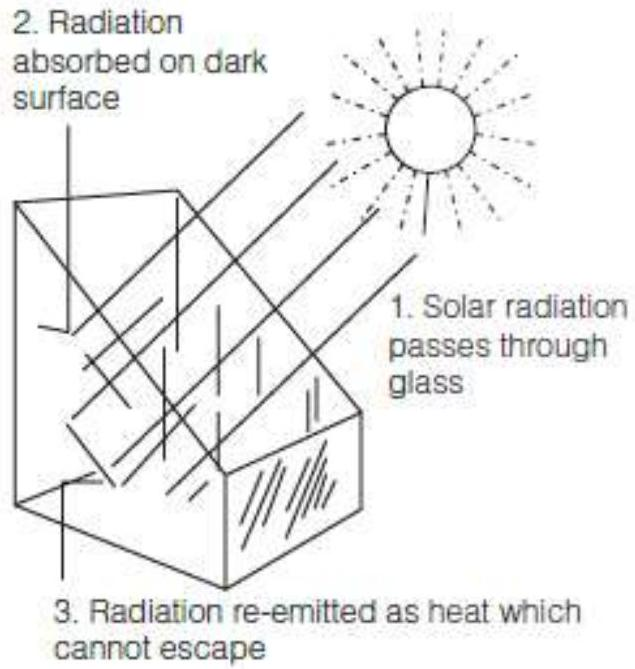
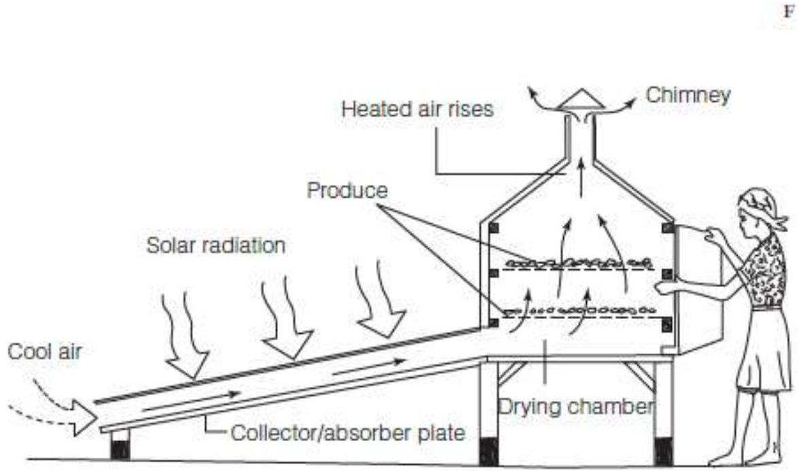
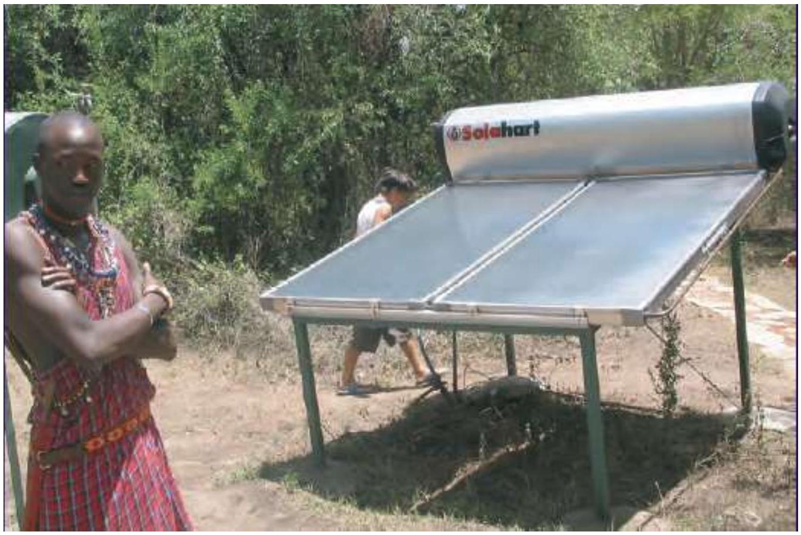

Basic Solar Energy Principles, Thermal Technologies & Applications
BASIC SOLAR ENERGY PRINCIPLES
As mentioned previously, we are able to harvest solar energy in two forms: as heat and as electricity. For solar thermal applications, radiant energy is directed using reflectors and concentrators. It is collected as heat by trapping and absorbing it on specially treated surfaces and by using the 'greenhouse effect'.
Principles of solar thermal technologies are provided herein for general information. It is good practice to understand the difference between solar thermal and solar electric technologies. Also, because solar electricity is not practical for generating heat, many off-grid PV users prefer to heat water and cook using solar thermal technology.
Finally, some solar electric equipment also uses principles more commonly associated with solar thermal technologies.
CONCENTRATING SOLAR ENERGY
Solar concentrators and reflectors help overcome the spread-out nature of solar energy. They redirect solar radiation incident over a large area, reflecting or focusing it to a small area where it is trapped or harnessed at high temperatures.
Concentrators make use of reflective surfaces and shapes that 'bounce' radiation off their surfaces and direct it to a focal point. By covering a large area with solar concentrators, most of the total radiation that falls on that area can be focused into a small area and absorbed as heat. Concentrators are useful only with direct (rather than diffuse) solar energy. They must be moved constantly to follow the changing position of the sun in the sky. Concentrated solar power (CSP) stations do this on an industrial scale, collecting and converting solar heat to electricity that is sold into the grid.

'Parabolic dishes' are bowl-shaped mirrors that focus radiant energy upon one point where the energy is concentrated and utilized (some solar cookers use these). 'Parabolic troughs' focus radiation along a pipe that runs through the centre.

'Simple reflectors' are flat mirrors or polished aluminum surfaces arranged around a device to increase the radiation incident upon it. Solar cookers and concentrating-type solar electric systems commonly use these.
TRAPPING SOLAR ENERGY
Solar energy is trapped as heat using properties of heat absorption, heat transfer, insulation and the 'greenhouse effect'.
Solar radiation is absorbed on surfaces as heat. The amount of heat radiation absorbed depends upon the incident surface area, the color and material of the surface, and the angle and intensity of the incoming radiation. Solar energy is best absorbed on surfaces that are perpendicular to the incoming solar radiation.
Dark-colored (i.e. black), non-reflective metal surfaces absorb solar radiation best. Solar waterheaters, stills, driers and cookers make use of black painted absorber surfaces for capturing heat.
The greenhouse effect, uses the properties of light and heat energy to accumulate heat from solar energy. Radiant energy can pass through glass (or clear plastic) surfaces, but infrared (heat) energy cannot. Thus, solar radiation passes through the glass windows of a sealed box, is absorbed by the surface behind the glass and re-radiated as heat which cannot pass back through the glass. This heat is trapped inside the solar collector and causes the temperature to rise inside the box. Solar box-cookers, solar driers, solar stills and solar-heated homes use the greenhouse effect to gain heat. Flat plate collectors, used in solar water-heating systems, take advantage of both the greenhouse effect and absorption principles to trap solar energy for heating air and water.
Solar heat, once collected, is either stored or used immediately. With solar water-heaters, captured heat is stored in the water, which is transferred by pipe to insulated water tanks.
SOLAR THERMAL TECHNOLOGIES
SOLAR CROP DRIERS
Solar driers heat air with collected solar radiation and use it to dry crops. There are two parts in the solar drying process. First, solar radiation is captured and used to heat air, increasing its ability to hold and carry water vapor. The second part of the process is the actual drying, during which heated air moves through the product, warming it and extracting moisture. Drying takes place in a large box called the 'drying chamber'. Air is either heated in a flat plate collector or through a window in the drying chamber.
Indirect solar driers have a flat plate collector and a separate drying chamber that allow efficient use of solar energy and more control over the drying process. The solar collector heats air and, by convection, forces it through racks of drying products in the drying chamber
SOLAR WATER-HEATERS
Solar water-heaters (SWHs) raise the temperature of water for bathing, washing, cleaning and cooking. The collectors consist of glass-covered panels (or evacuated tubes) with dark-colored pipes inside. Water (or a heat transfer fluid) flows through the pipes and is warmed by the sun, then stored in insulated tanks for use in washing and bathing.
SOLAR COOKERS
Solar cookers concentrate and collect solar energy as heat for preparing meals. They can be divided into two general groups.
'Box-type cookers' are the simplest, least expensive and successfully disseminated solar cookers. A solar box-cooker is a large insulated box containing an enclosed cooking space with a window. One or more mirrors (or aluminum sheets) reflect radiation into the box through the window. Food is placed inside the cooking space. When the window is closed and the cooker faces the sun, the inside cooking temperature may rise above $160^{\circ} \mathrm{C}\left(320^{\circ} \mathrm{F}\right)$. Box-cookers can be cheaply made and are best used for slow-cooking meals such as stews, porridge and rice dishes or for baking.
'Concentrating-type cookers' concentrate and focus solar energy as heat on to the vessel containing the food. Food is placed in the cooking vessel during operation, the vessel is placed on the cooker grill and the concentrator is adjusted to focus the sun's rays on to the pot. If the concentrator is properly oriented, the cooking vessel's bottom immediately heats up. Direct solar cookers produce temperatures high enough to roast or fry. Water reaches boiling point just as quickly as it does use conventional cookers. Some very large concentrating-type cookers are used to generate steam which then cooks the food in pressurized vessels.
APPLICATIONS OF SOLAR ENERGY
Solar energy can effectively replace small applications of the fuel generators some of the applications may include
- Solar home systems to power various electronics and electrical appliances in homes i.e. Lights, television, radio, for charging mobile phones, etc.
- Small industries and institutions i.e. schools, small businesses, etc. to power lights, small machines, security systems.
- Telecommunication systems - used in areas with no access to power hence a standalone PV system is used to power communication devices.
- Health center for refrigeration of vaccines and lighting purposes
- Water pumping
- Electric fencing
- Solar street lighting
- Road sign illumination
- Railway and marine signal lighting
- Security systems i.e. fire and alarm systems
SOLAR ENERGY PROJECTS IN KENYA
Several solar power stations are operational or under construction are 55 MW Garissa, 40 MW Rumuruti, 40 MW Radiant, 40 MW Eldosol, 40 MW Alten, 10 MW Kenyatta University, 52 MW Malindi and 50 MW Kopere.